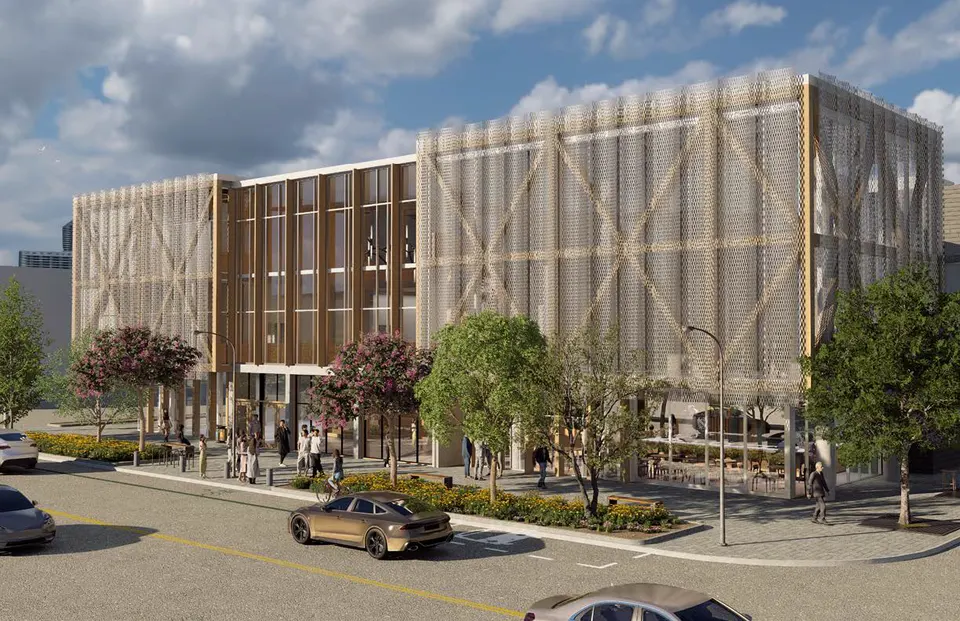
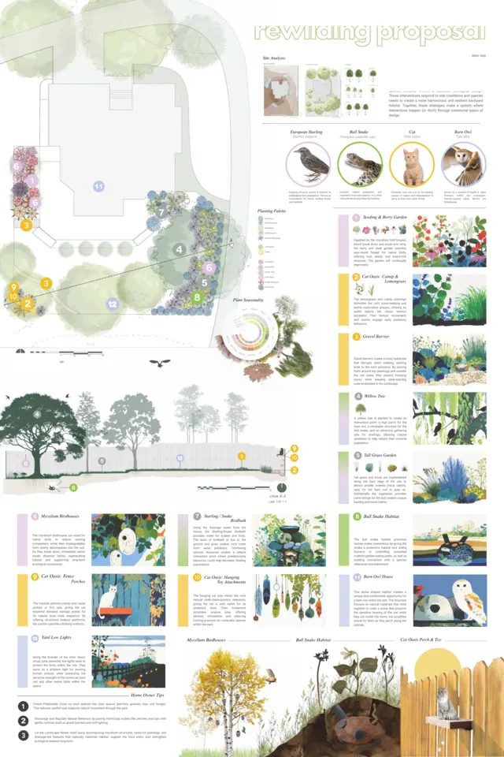
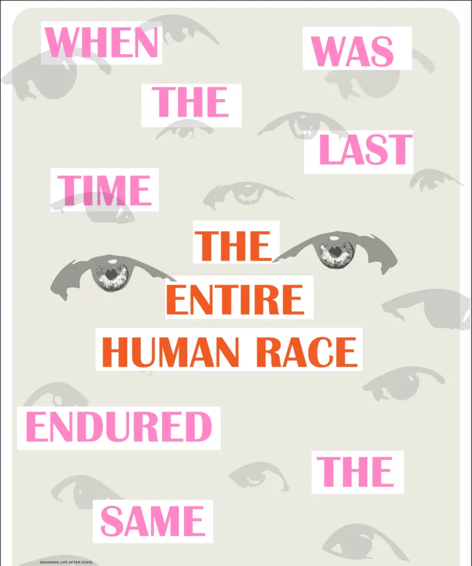
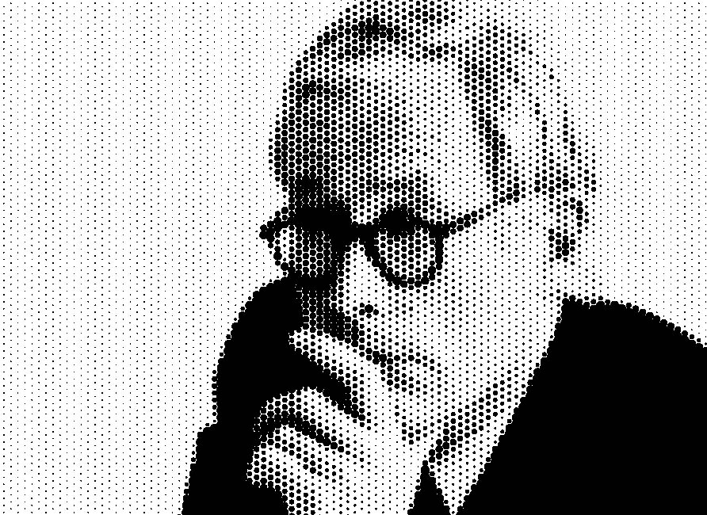
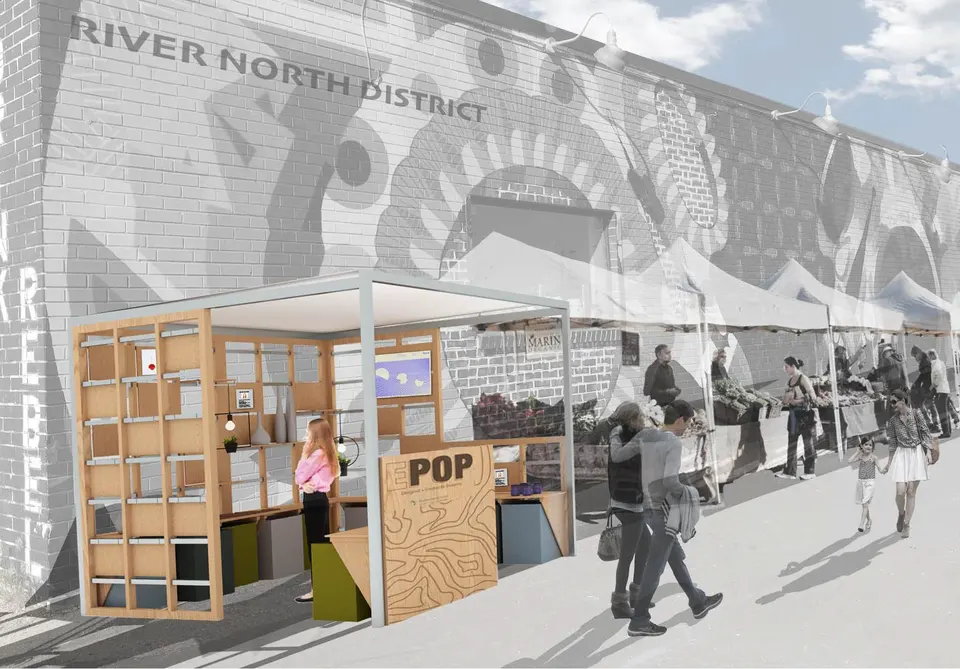

ALL LEVELS
12 courses
FOUNDATION
intro studio
ADVANCED
options studio
CAPSTONE
thesis studio
SEMINARS
special topics
Showing all 12 courses

Seminar / Special Topics|Spring 2026|AI Collaboration
Generative Design with AI
CU Boulder's first generative AI design course, framing AI as a creative collaborator while foregrounding human authorship and ethical agency.

Advanced / Options|Studio|Design-Build
Design-Build Studios
Three community design-build partnerships, including work with Denver Botanic Gardens and the Northeast Denver Housing Center, carried from concept through construction.

Capstone / Thesis|Spring 2026
Iceland Slow Sauna Competition
A capstone thesis studio researching ritual, light, and material response to the Icelandic landscape through four sauna and bathing proposals.

Capstone / Thesis|Spring 2025
Museum of Analog Experience
A capstone thesis studio imagining museums built around slowness, craft, and analog experience in a digital age.

Capstone / Thesis|2016 to 2024
EPOD Capstone Studio
Environmental Product Design capstone studio spanning entrepreneurship, professional practice, and independent thesis research.

Foundation|Fall 2025
Urban Rewilding Studio
A foundation studio introducing ecological design and site research through the lens of urban rewilding.

Seminar / Special Topics|Spring 2025
Graphic Design and Portfolio
A seminar and workshop on visual communication and professional portfolio development.
Foundation|Fall 2024
Luminaire Studio
A foundation studio in material exploration and digital fabrication, centered on the design of a single luminous object.

Seminar / Special Topics|2017 to 2025
Theory and Ethics of Design
A seminar on critical and ethical inquiry in design practice.

Advanced / Options|Fall 2019
EPOP Retail Outlet
An advanced studio in entrepreneurship and professional practice, designing and building a retail environment.

Foundation|2020 to 2024
Studio I | Environmental Product Design
A foundation studio in environmental product design.

Seminar / Special Topics|2010 to 2023
Advanced Digital Modeling with Rhino
A seminar in computational design and digital fabrication using Rhino.